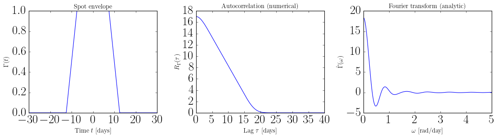
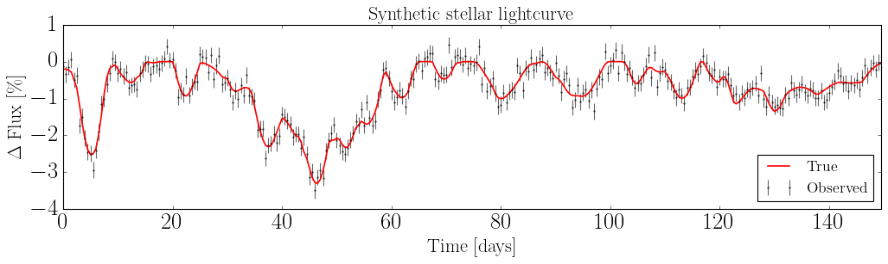
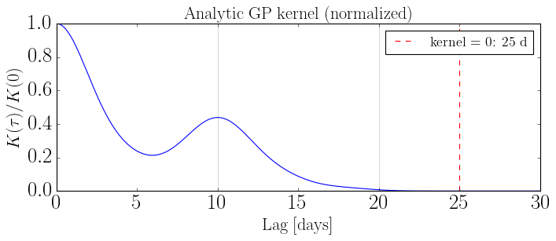

Spot Evolution Model#
This notebook walks through the spotgp workflow using TrapezoidSymmetricEnvelope:
Inspect the envelope — parameter keys and analytic (sympy) equations
Build a
SpotEvolutionModelfrom envelope + visibility componentsSimulate a stellar lightcurve with
LightcurveModelWarm up JAX with
build_jax()before fitting
For GP hyperparameter fitting, see gp_optimization.ipynb.
[ ]:
import sys
sys.path.append("../..")
import numpy as np
import matplotlib.pyplot as plt
from src_jax import (
TrapezoidSymmetricEnvelope,
VisibilityFunction,
SpotEvolutionModel,
LightcurveModel,
AnalyticKernel,
)
np.random.seed(42)
1. Inspect the envelope#
The symmetric trapezoid envelope has a linear rise over tau_spot, a flat plateau of duration lspot, then a symmetric linear decay.
[2]:
envelope = TrapezoidSymmetricEnvelope(
lspot=15.0, # plateau duration [days]
tau_spot=5.0, # rise/decay timescale [days]
)
# param_dict maps parameter names to their current values
print("param_dict :", envelope.param_dict)
print("tau_spot :", envelope.tau_spot)
print("lspot :", envelope.lspot)
print("kernel_support:", envelope.kernel_support(), "days")
param_dict : {'lspot': 15.0, 'tau_spot': 5.0}
tau_spot : 5.0
lspot : 15.0
kernel_support: 25.0 days
Analytic equations via get_sympy()#
get_sympy() prints LaTeX for every function that has a closed-form analytic expression.R_Gamma for the trapezoid) are labeled [numerical].[3]:
_ = envelope.get_sympy()
TrapezoidSymmetricEnvelope
$\Gamma(t) = \begin{cases} 0 & \text{for}\: t < - \frac{\ell}{2} - \tau_{\rm spot} \\\frac{\frac{\ell}{2} + \tau_{\rm spot} + t}{\tau_{\rm spot}} & \text{for}\: t < - \frac{\ell}{2} \\1 & \text{for}\: t \leq \frac{\ell}{2} \\\frac{\frac{\ell}{2} + \tau_{\rm spot} - t}{\tau_{\rm spot}} & \text{for}\: t < \frac{\ell}{2} + \tau_{\rm spot} \\0 & \text{otherwise} \end{cases}$
$\hat{\Gamma}(\omega) = \frac{4 \left(\omega \tau_{\rm spot} \cos{\left(\frac{\ell \omega}{2} \right)} + \sin{\left(\frac{\ell \omega}{2} \right)} - \sin{\left(\frac{\ell \omega}{2} + \omega \tau_{\rm spot} \right)}\right)}{\omega^{3} \tau_{\rm spot}^{2}}$
$R_{\Gamma}(\tau) = \text{[numerical]}$
[4]:
import jax.numpy as jnp
t = np.linspace(-30, 30, 500)
fig, axes = plt.subplots(1, 3, figsize=(14, 4))
axes[0].plot(t, envelope.Gamma(jnp.array(t)))
axes[0].set_xlabel("Time $t$ [days]", fontsize=13)
axes[0].set_ylabel(r"$\Gamma(t)$", fontsize=13)
axes[0].set_title("Spot envelope", fontsize=13)
lag = np.linspace(0, 40, 500)
axes[1].plot(lag, envelope.R_Gamma(jnp.array(lag)))
axes[1].set_xlabel(r"Lag $\tau$ [days]", fontsize=13)
axes[1].set_ylabel(r"$R_\Gamma(\tau)$", fontsize=13)
axes[1].set_title("Autocorrelation (numerical)", fontsize=13)
omega = np.linspace(0, 5, 500)
axes[2].plot(omega, envelope.Gamma_hat(jnp.array(omega)))
axes[2].set_xlabel(r"$\omega$ [rad/day]", fontsize=13)
axes[2].set_ylabel(r"$\hat{\Gamma}(\omega)$", fontsize=13)
axes[2].set_title("Fourier transform (analytic)", fontsize=13)
fig.tight_layout()
plt.show()

2. Build a SpotEvolutionModel#
A SpotEvolutionModel combines:
an ``EnvelopeFunction`` — spot size evolution
a ``VisibilityFunction`` — stellar rotation geometry
an amplitude (
sigma_k, or the physical tripletnspot_rate + fspot + alpha_max)
[5]:
visibility = VisibilityFunction(
peq=10.0, # equatorial rotation period [days]
kappa=0.3, # differential rotation shear
inc=np.pi / 3, # stellar inclination [rad]
)
print("param_keys:", visibility.param_keys)
print("param_dict:", visibility.param_dict)
param_keys: ('peq', 'kappa', 'inc')
param_dict: {'peq': 10.0, 'kappa': 0.3, 'inc': 1.0471975511965976}
[6]:
# The visibility function encodes differential rotation (omega_0)
# and the Fourier series coefficients c_n that describe how the flux
# from a spot at latitude phi varies over a full rotation.
_ = visibility.get_sympy()
VisibilityFunction
$\omega_0(\phi) = \frac{2 \pi \left(- \kappa \sin^{2}{\left(\phi \right)} + 1\right)}{P_{\rm eq}}$
$a_0 = \sin{\left(\phi \right)} \cos{\left(i \right)}$
$a_1 = \sin{\left(i \right)} \cos{\left(\phi \right)}$
$\theta_v = \operatorname{acos}{\left(- \frac{a_{0}}{a_{1}} \right)}$
$c_0 = \frac{\theta_{v} a_{0} + a_{1} \sin{\left(\theta_{v} \right)}}{\pi}$
$c_1 = \frac{a_{0} \sin{\left(\theta_{v} \right)} + \frac{a_{1} \left(\theta_{v} + \sin{\left(\theta_{v} \right)} \cos{\left(\theta_{v} \right)}\right)}{2}}{\pi}$
$c_n = \frac{\frac{a_{0} \sin{\left(\theta_{v} n \right)}}{n} + \frac{a_{1} \left(\frac{\sin{\left(\theta_{v} \left(n + 1\right) \right)}}{n + 1} + \frac{\sin{\left(\theta_{v} \left(n - 1\right) \right)}}{n - 1}\right)}{2}}{\pi}$ $(n \geq 2)$
[7]:
model = SpotEvolutionModel(
envelope=envelope,
visibility=visibility,
sigma_k=0.01, # kernel amplitude
)
# param_keys is envelope-aware: the order is always
# (peq, kappa, inc, <envelope params>, sigma_k)
print("param_keys:", model.param_keys)
print()
print(model)
param_keys: ('peq', 'kappa', 'inc', 'lspot', 'tau_spot', 'sigma_k')
SpotEvolutionModel(
envelope=TrapezoidSymmetricEnvelope({'lspot': 15.0, 'tau_spot': 5.0}),
visibility=VisibilityFunction(peq=10.0, kappa=0.3, inc=1.047),
sigma_k=0.01
)
[8]:
# SpotEvolutionModel.get_sympy() delegates to both sub-components
_ = model.get_sympy()
SpotEvolutionModel
envelope : TrapezoidSymmetricEnvelope
visibility: VisibilityFunction
TrapezoidSymmetricEnvelope
$\Gamma(t) = \begin{cases} 0 & \text{for}\: t < - \frac{\ell}{2} - \tau_{\rm spot} \\\frac{\frac{\ell}{2} + \tau_{\rm spot} + t}{\tau_{\rm spot}} & \text{for}\: t < - \frac{\ell}{2} \\1 & \text{for}\: t \leq \frac{\ell}{2} \\\frac{\frac{\ell}{2} + \tau_{\rm spot} - t}{\tau_{\rm spot}} & \text{for}\: t < \frac{\ell}{2} + \tau_{\rm spot} \\0 & \text{otherwise} \end{cases}$
$\hat{\Gamma}(\omega) = \frac{4 \left(\omega \tau_{\rm spot} \cos{\left(\frac{\ell \omega}{2} \right)} + \sin{\left(\frac{\ell \omega}{2} \right)} - \sin{\left(\frac{\ell \omega}{2} + \omega \tau_{\rm spot} \right)}\right)}{\omega^{3} \tau_{\rm spot}^{2}}$
$R_{\Gamma}(\tau) = \text{[numerical]}$
VisibilityFunction
$\omega_0(\phi) = \frac{2 \pi \left(- \kappa \sin^{2}{\left(\phi \right)} + 1\right)}{P_{\rm eq}}$
$a_0 = \sin{\left(\phi \right)} \cos{\left(i \right)}$
$a_1 = \sin{\left(i \right)} \cos{\left(\phi \right)}$
$\theta_v = \operatorname{acos}{\left(- \frac{a_{0}}{a_{1}} \right)}$
$c_0 = \frac{\theta_{v} a_{0} + a_{1} \sin{\left(\theta_{v} \right)}}{\pi}$
$c_1 = \frac{a_{0} \sin{\left(\theta_{v} \right)} + \frac{a_{1} \left(\theta_{v} + \sin{\left(\theta_{v} \right)} \cos{\left(\theta_{v} \right)}\right)}{2}}{\pi}$
$c_n = \frac{\frac{a_{0} \sin{\left(\theta_{v} n \right)}}{n} + \frac{a_{1} \left(\frac{\sin{\left(\theta_{v} \left(n + 1\right) \right)}}{n + 1} + \frac{\sin{\left(\theta_{v} \left(n - 1\right) \right)}}{n - 1}\right)}{2}}{\pi}$ $(n \geq 2)$
3. Simulate a stellar lightcurve#
LightcurveModel.from_spot_model() builds a forward simulation directly from the SpotEvolutionModel, so there is no need to repeat parameters.
[9]:
lc = LightcurveModel.from_spot_model(
spot_model=model,
nspot=30, # total number of spots to place
tsim=150, # simulation duration [days]
tsamp=0.5, # cadence [days]
lat=[-np.pi / 2, np.pi / 2],
long=[0, 2 * np.pi],
)
print(f"Lightcurve: {len(lc.t)} points "
f"[{lc.t[0]:.1f} – {lc.t[-1]:.1f} days]")
print(f"Flux: mean={np.mean(lc.flux):.5f} std={np.std(lc.flux):.5f}")
Lightcurve: 300 points [0.0 – 149.5 days]
Flux: mean=0.99227 std=0.00727
[10]:
# Add realistic photometric noise
sigma_n = 0.3 * np.std(lc.flux) # noise ~ 30 % of signal std
flux_obs = lc.flux + np.random.normal(0, sigma_n, lc.flux.shape)
flux_err = np.full_like(flux_obs, sigma_n)
tobs = lc.t
[16]:
fig, ax = plt.subplots(figsize=(13, 4))
ax.errorbar(tobs, (flux_obs - 1) * 100, yerr=flux_err * 100,
fmt=".k", ms=3, capsize=0, alpha=0.6, label="Observed")
ax.plot(lc.t, (lc.flux - 1) * 100, "r-", lw=1.5, label="True")
ax.set_xlabel("Time [days]", fontsize=20)
ax.set_ylabel(r"$\Delta$ Flux [\%]", fontsize=20)
ax.set_title("Synthetic stellar lightcurve", fontsize=20)
ax.legend(fontsize=16, loc="lower right")
ax.set_xlim(tobs[0], tobs[-1])
fig.tight_layout()
plt.show()

4. Warm up JAX with build_jax()#
JAX compiles computation graphs to XLA on the first call for each new input shape. That compilation can take 5–30 s and is easy to mistake for slow runtime.
Call build_jax() once after construction to pay the compile cost upfront:
Class |
What gets compiled |
|---|---|
|
|
|
|
After build_jax(), every subsequent call at the same input shape will be fast.
[17]:
# Build the analytic kernel and warm up its JAX computation
ak = AnalyticKernel(model).build_jax()
# Subsequent kernel evaluations are fast
import time
lag = np.linspace(0, 3 * model.peq, 300)
t0 = time.time()
K = ak.kernel(lag)
print(f"Kernel eval (post-compile): {(time.time() - t0)*1e3:.1f} ms")
JAX kernel compiled in 3.66s
Kernel eval (post-compile): 625.7 ms
[20]:
fig, ax = plt.subplots(figsize=(9, 4))
ax.plot(lag, K / K[0])
for n in range(int(lag[-1] / model.peq) + 1):
ax.axvline(n * model.peq, color="k", alpha=0.15, lw=1)
ax.axvline(envelope.kernel_support(), color="r", ls="--",
label=f"kernel = 0: {envelope.kernel_support():.0f} d")
ax.set_xlabel("Lag [days]", fontsize=20)
ax.set_ylabel(r"$K(\tau) / K(0)$", fontsize=20)
ax.set_title("Analytic GP kernel (normalized)", fontsize=20)
ax.legend(fontsize=16)
fig.tight_layout()
plt.show()
